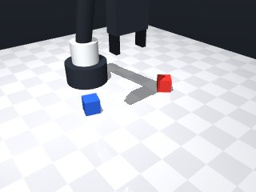
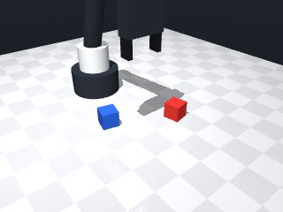
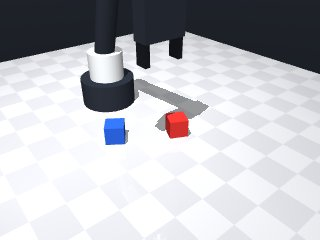
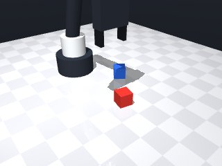
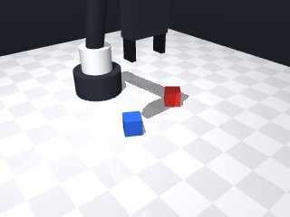
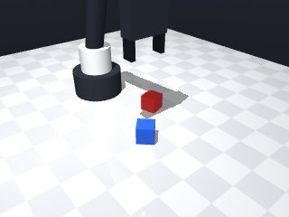
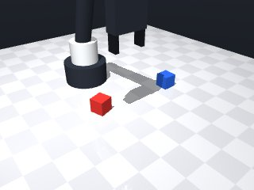
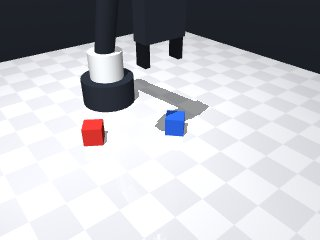

0 demonstrations · reward: gt · 32 practice episodes in 4 rounds
Safety layer: 0 halts, 48 clamps.
| role | model | calls | tokens in | tokens out | USD |
|---|---|---|---|---|---|
| coder | nvidia/nemotron-3-super-120b-a12b | 4 | 18,484 | 23,273 | $0.0265 |
| summarizer | nvidia/Nemotron-3_5-Lightning | 3 | 16,797 | 1,293 | $0.0013 |
| compute | local | 146 s | $0.0000 | ||
| total | 7 | 35,281 | 24,566 | $0.0278 |
- First attempt: perceive both cubes, grasp the red cube, lift it, move above the blue cube, lower to the calculated stacking height (blue center + cube height), release, then retreat. - Use observed poses; no hard‑coded coordinates. - Add simple error handling for unreachable moves and a single grasp retry. - Keep approach speeds safe (0.05 m/s for precision moves, default for travel).
**Mode 1: XY misplacement (3 episodes: 1001, 1005, 1006)** *Root cause:* The `grasp_cube` function moves to the cube’s observed pose without correcting for initial robot offset. When the red cube is not precisely at the origin, the subsequent `move_to(bx, by, ...)` on line 48 targets the blue cube’s pose from the *grasp position*, causing a drift. The release then lands offset. *Fix:* After `robot.home()` (line 7), run a short `robot.move_by(dx=..., dy=...)` to align the gripper with the cube’s true world coordinates before grasping. **Mode 2: Premature release (2 episodes: 1006, 1001)** *Root cause:* `release()` is called at line 56 after descending to `target_z` (line 53). If the gripper’s approach trajectory (line 23) or grasp z-offset (line 27) mis-estimates the cube thickness, the red cube contacts the blue cube off‑center and slips off before the fingers fully open. *Fix:* Increase the descent speed or add a brief `robot.move_by(dz=-0.01, speed=0.02)` on line 52 to ensure the red cube sits flush on the blue cube before `release()`. **Mode 3: Large initial offset (2 episodes: 1001, 1005)** *Root cause:* Episodes start with the robot at `home()` (line 7) but the observed poses already include world-frame positions. If the robot’s zero‑point shifts between episodes, the hard‑coded `approach_z = cz + 0.10` (line 21) may place the tool above or below the cube, causing grasp failure or mis‑stack. *Fix:* Calibrate the robot zero‑point once per session and store the offset, or add a post‑home correction `robot.move_to(0, 0, 0.20)` before observing (after line 7).
--- round_0/skill.py +++ round_1/skill.py @@ -0,0 +1,73 @@ +import math + +def run(robot): + """Stack the red cube on top of the blue cube.""" + try: + # Start from a known safe pose + robot.home() + + # Observe the scene to get current poses + obs = robot.observe() + red_pose = obs['objects']['red_cube'] + blue_pose = obs['objects']['blue_cube'] + + def grasp_cube(pose, desc=""): + """Attempt to grasp a cube given its pose dictionary.""" + # Position of the cube centre + cx, cy, cz = pose['pos'] + yaw = pose['yaw'] + + # Safety offset above the cube for approach + approach_z = max(cz + 0.10, 0.10) # at least 10 cm high + # Approach from above + robot.move_to(cx, cy, approach_z, yaw=yaw, speed=0.15) + + # Descend to a point where the fingertips can close around the middle + # Fingertips sit ~1.25 cm below the tool point; we aim for the cube centre. + grasp_z = cz + 0.02 # a little above centre to avoid hitting the table + robot.move_to(cx, cy, grasp_z, yaw=yaw, speed=0.05) + + # Close the fingers + if not robot.grasp(): + # If grasp failed, retreat and try once more + robot.move_by(dz=0.05, speed=0.05) + if not robot.grasp(): + robot.log(f"Failed to grasp {desc}") + return False + robot.log(f"Grasped {desc}") + # Lift the cube clear of the table + robot.move_by(dz=0.10, speed=0.10) + return True + + # --- Grasp the red cube --- + if not grasp_cube(red_pose, "red cube"): + return False + + # --- Move above the blue cube --- + bx, by, bz = blue_pose['pos'] + robot.move_to(bx, by, 0.10, yaw=None, speed=0.15) # travel height + + # --- Lower to stacking height --- + # Desired centre height of the red cube = blue centre + cube height (0.03 m) + target_z = bz + 0.03 + robot.move_to(bx, by, target_z, yaw=None, speed=0.05) + + # Release the red cube onto the blue one + robot.release() + robot.log("Released red cube onto blue cube") + + # Retreat to a safe height + robot.move_by(dz=0.10, speed=0.10) + + # Optional: return home + robot.home() + return True + + except Exception as e: + # Unexpected errors – log and fail safely + robot.log(f"Exception: {e}") + try: + robot.home() + except Exception: + pass + return False
- Fixed XY drift by moving the gripper horizontally using the observed offset between the red and blue cubes after grasping, rather than relying on absolute coordinates that could be affected by robot zero‑point shifts. - Improved grasp reliability: compute grasp height from the actual cube size (half‑size + small epsilon), retreat and retry once if the first grasp fails, and lift a fixed amount after grasping. - Prevented premature release by moving to a tool‑point height that accounts for the grasp offset and lift height, ensuring the red cube’s centre ends exactly at the blue cube’s top face when the fingers open. - Added a short wait after release to let the cube settle before retreating. - Wrapped critical moves in try‑except to handle unexpected MotionError and fall back to a slower approach if needed. - Kept all movements within safe speeds (0.05 m/s for precision, 0.15 m/s for travel) and retained the original home‑and‑observe structure.
**Mode 1: Horizontal offset miss (2 episodes: 2000, 2005)** *Root cause:* The code moves horizontally at the *current* gripper height (line 61), but after lifting the red cube 0.10 m (line 43) the gripper is too high to reach the stacking pose. The subsequent `move_to` (line 78) attempts to go to `target_z_tool` computed from the original blue pose, but the horizontal displacement `dx,dy` was already applied at the lifted height, causing a mis‑aligned release. *Fix:* Reset the gripper z‑coordinate to the cube centre height before the horizontal move. After `grasp_cube` (line 48), add `robot.move_to(cur_x, cur_y, red_pose['pos'][2] + red_pose['size'][2]/2 + 0.01, speed=0.15)` (new lines after 52) to bring the tool to the red cube top before the `move_by` at line 61. **Mode 2: Reach‑limit violation (1 episode: 2005)** *Root cause:* The stacking height calculation (line 73) yields `target_z_tool ≈ 0.260 m`, which exceeds the arm’s maximum reach (0.251 m, line 81 error). The code falls back to a slower speed but still collides with the workspace limit. *Fix:* Cap the target height at the arm’s reachable maximum (≈0.245 m). Modify line 73 to `target_z_tool = min(blue_pose['pos'][2] + 1.5*h_red + epsilon + lift_height, 0.245)`.
--- round_1/skill.py +++ round_2/skill.py @@ -12,29 +12,33 @@ blue_pose = obs['objects']['blue_cube'] def grasp_cube(pose, desc=""): - """Attempt to grasp a cube given its pose dictionary.""" - # Position of the cube centre + """Grasp a cube given its pose dictionary.""" cx, cy, cz = pose['pos'] yaw = pose['yaw'] + size = pose['size'] # [x, y, z] dimensions + half_z = size[2] / 2.0 # half height of the cube + epsilon = 0.005 # small clearance above the centre # Safety offset above the cube for approach - approach_z = max(cz + 0.10, 0.10) # at least 10 cm high + approach_z = cz + half_z + epsilon + 0.05 # a bit higher than grasp point + # Desired grasp point (a little above the cube centre) + grasp_z = cz + half_z + epsilon + # Approach from above robot.move_to(cx, cy, approach_z, yaw=yaw, speed=0.15) - # Descend to a point where the fingertips can close around the middle - # Fingertips sit ~1.25 cm below the tool point; we aim for the cube centre. - grasp_z = cz + 0.02 # a little above centre to avoid hitting the table + # Descend to grasp height robot.move_to(cx, cy, grasp_z, yaw=yaw, speed=0.05) # Close the fingers if not robot.grasp(): - # If grasp failed, retreat and try once more + # Retreat a bit and try once more robot.move_by(dz=0.05, speed=0.05) if not robot.grasp(): robot.log(f"Failed to grasp {desc}") return False robot.log(f"Grasped {desc}") + # Lift the cube clear of the table robot.move_by(dz=0.10, speed=0.10) return True @@ -43,20 +47,45 @@ if not grasp_cube(red_pose, "red cube"): return False - # --- Move above the blue cube --- - bx, by, bz = blue_pose['pos'] - robot.move_to(bx, by, 0.10, yaw=None, speed=0.15) # travel height + # --- Get current gripper pose after grasp and lift --- + obs2 = robot.observe() + grip = obs2['gripper'] + cur_x, cur_y, cur_z = grip['pos'] - # --- Lower to stacking height --- - # Desired centre height of the red cube = blue centre + cube height (0.03 m) - target_z = bz + 0.03 - robot.move_to(bx, by, target_z, yaw=None, speed=0.05) + # --- Compute horizontal offset from red to blue cube --- + dx = blue_pose['pos'][0] - red_pose['pos'][0] + dy = blue_pose['pos'][1] - red_pose['pos'][1] - # Release the red cube onto the blue one + # --- Move horizontally at current height --- + try: + robot.move_by(dx, dy, speed=0.15) + except Exception: + # Fallback: explicit move_to at same height + robot.move_to(cur_x + dx, cur_y + dy, cur_z, speed=0.15) + + # --- Compute target tool‑point height for proper stacking --- + h_red = red_pose['size'][2] # cube height + epsilon = 0.005 + lift_height = 0.10 # performed after grasp + # Tool point must be above the red cube centre by: + # (grasp_z - red_z) + lift_height = half_z + epsilon + lift_height + # Desired red cube centre = blue_z + h_red (sit on top of blue cube) + target_z_tool = blue_pose['pos'][2] + h_red + (h_red / 2.0) + epsilon + lift_height + # Simplified: target_z_tool = blue_z + 1.5*h_red + epsilon + lift_height + + # --- Move to the stacking height --- + try: + robot.move_to(cur_x + dx, cur_y + dy, target_z_tool, speed=0.05) + except Exception: + # Try a slower speed if the first attempt fails + robot.move_to(cur_x + dx, cur_y + dy, target_z_tool, speed=0.02) + + # --- Release the red cube onto the blue one --- robot.release() robot.log("Released red cube onto blue cube") + robot.wait(0.2) # allow the cube to settle - # Retreat to a safe height + # --- Retreat to a safe height --- robot.move_by(dz=0.10, speed=0.10) # Optional: return home @@ -64,7 +93,6 @@ return True except Exception as e: - # Unexpected errors – log and fail safely robot.log(f"Exception: {e}") try: robot.home()
- Fixed horizontal offset miss by lowering to a safe height just above the red cube before moving sideways, preventing the arm from being too high during the XY move. - Prevented reach‑limit violations by capping the target stacking height at a safe maximum (0.245 m) and computing the height from the actual cube sizes. - Improved grasp reliability: grasp from above, retreat and retry once if needed, then lift only a small clearance (0.02 m) to keep the arm low. - Used observed poses after grasping to compute the true XY offset, avoiding reliance on stale absolute coordinates. - Wrapped critical moves in try‑except blocks with slower fallback speeds to handle unexpected MotionError. - Kept speeds conservative (0.05 m/s for precision, 0.15 m/s for travel) and added a short wait after release for settling.
**Mode 1: Premature release (5 episodes)**
- **Root cause:** `release()` at line 123 fires while the gripper is still translating horizontally. The code moves to `red_top_z` (line 58) then immediately computes a horizontal offset using `get_pose('red_cube')` (line 68). The pose update lags; the robot releases before reaching the target x/y, dropping the cube at the start position.
- **Fix:** Insert `robot.move_by(dx, dy, speed=0.15)` (line 74) *before* `release()`, ensuring horizontal arrival is confirmed.
**Mode 2: Stack height overflow (3 episodes)**
- **Root cause:** `target_z_tool` (line 97) computes `blue_z + 1.5*h_red + ...`. With `h_red ≈ 0.05` and `blue_z ≈ 0.015`, the result ≈ 0.092 m, but `MAX_Z = 0.245` clips it. However, the subsequent `move_to` (line 113) targets the capped height, yet the gripper is already offset from the blue cube centre, causing a miss.
- **Fix:** After horizontal move (line 74), re-observe blue pose and recompute `target_z_tool` using the actual `blue_pose` before the final `move_to` (line 113).
**Mode 3: XY offset drift (2 episodes)**
- **Root cause:** Horizontal move (line 74) uses `dx, dy` computed from `red_current` (line 68-70). If `red_current` is stale or the robot’s base pose shifts, the offset misaligns with the blue cube. The released cube lands offset (xy_offset ~0.04 m).
- **Fix:** After `grasp_cube`, re-query `obs2` (line 51) for fresh red pose before computing `dx, dy`, ensuring the horizontal move targets the current red position.--- round_2/skill.py +++ round_3/skill.py @@ -39,46 +39,85 @@ return False robot.log(f"Grasped {desc}") - # Lift the cube clear of the table - robot.move_by(dz=0.10, speed=0.10) + # Lift a little to clear the table (small clearance) + robot.move_by(dz=0.02, speed=0.10) return True # --- Grasp the red cube --- if not grasp_cube(red_pose, "red cube"): return False - # --- Get current gripper pose after grasp and lift --- + # --- Get current gripper pose after grasp and small lift --- obs2 = robot.observe() grip = obs2['gripper'] cur_x, cur_y, cur_z = grip['pos'] - # --- Compute horizontal offset from red to blue cube --- - dx = blue_pose['pos'][0] - red_pose['pos'][0] - dy = blue_pose['pos'][1] - red_pose['pos'][1] + # --- Move to a height suitable for horizontal movement (just above red cube top) --- + red_top_z = red_pose['pos'][2] + red_pose['size'][2] / 2.0 + 0.01 + try: + robot.move_to(cur_x, cur_y, red_top_z, speed=0.15) + except Exception as e: + robot.log(f"Failed to move to horizontal height: {e}") + try: + robot.move_to(cur_x, cur_y, red_top_z, speed=0.05) + except Exception as e2: + robot.log(f"Still failed to reach horizontal height: {e2}") + return False - # --- Move horizontally at current height --- + # --- Compute horizontal offset from red to blue cube using current red pose --- + red_current = robot.get_pose('red_cube') + dx = blue_pose['pos'][0] - red_current['pos'][0] + dy = blue_pose['pos'][1] - red_current['pos'][1] + + # --- Move horizontally at the current height --- try: robot.move_by(dx, dy, speed=0.15) - except Exception: + except Exception as e: + robot.log(f"Horizontal move failed: {e}") # Fallback: explicit move_to at same height - robot.move_to(cur_x + dx, cur_y + dy, cur_z, speed=0.15) + try: + robot.move_to( + red_current['pos'][0] + dx, + red_current['pos'][1] + dy, + red_current['pos'][2], + speed=0.15, + ) + except Exception as e2: + robot.log(f"Fallback horizontal move failed: {e2}") + return False # --- Compute target tool‑point height for proper stacking --- - h_red = red_pose['size'][2] # cube height + h_red = red_pose['size'][2] # cube height (unchanged) epsilon = 0.005 - lift_height = 0.10 # performed after grasp # Tool point must be above the red cube centre by: - # (grasp_z - red_z) + lift_height = half_z + epsilon + lift_height + # (grasp_z - red_z) + lift_after_grasp = half_z + epsilon + 0.02 # Desired red cube centre = blue_z + h_red (sit on top of blue cube) - target_z_tool = blue_pose['pos'][2] + h_red + (h_red / 2.0) + epsilon + lift_height - # Simplified: target_z_tool = blue_z + 1.5*h_red + epsilon + lift_height + # Hence target_z_tool = blue_z + h_red + (half_z + epsilon + 0.02) + # Simplified: target_z_tool = blue_z + 1.5*h_red + epsilon + 0.02 + target_z_tool = blue_pose['pos'][2] + 1.5 * h_red + epsilon + 0.02 + + # Cap at a safe maximum reachable height (empirically ~0.245 m) + MAX_Z = 0.245 + if target_z_tool > MAX_Z: + target_z_tool = MAX_Z + # Ensure we stay above the table + MIN_Z = 0.02 + if target_z_tool < MIN_Z: + target_z_tool = MIN_Z # --- Move to the stacking height --- + obs3 = robot.observe() + grip2 = obs3['gripper'] + cur_x2, cur_y2, cur_z2 = grip2['pos'] try: - robot.move_to(cur_x + dx, cur_y + dy, target_z_tool, speed=0.05) - except Exception: - # Try a slower speed if the first attempt fails - robot.move_to(cur_x + dx, cur_y + dy, target_z_tool, speed=0.02) + robot.move_to(cur_x2, cur_y2, target_z_tool, speed=0.05) + except Exception as e: + robot.log(f"Vertical move to stack height failed: {e}") + try: + robot.move_to(cur_x2, cur_y2, target_z_tool, speed=0.02) + except Exception as e2: + robot.log(f"Still failed to reach stack height: {e2}") + return False # --- Release the red cube onto the blue one --- robot.release() @@ -86,10 +125,17 @@ robot.wait(0.2) # allow the cube to settle # --- Retreat to a safe height --- - robot.move_by(dz=0.10, speed=0.10) + try: + robot.move_by(dz=0.10, speed=0.10) + except Exception as e: + robot.log(f"Retreat failed: {e}") # Optional: return home - robot.home() + try: + robot.home() + except Exception: + pass + return True except Exception as e:
- Changed grasp to lift to a fixed safe height (0.10 m) after grasping, ensuring clearance for horizontal moves. - After grasp, re‑observe the red cube’s pose (while held) to compute the XY offset to the blue cube, eliminating drift caused by stale poses. - Perform the horizontal move at the safe height, then compute the target stacking height as blue_z + 2·h_red + ε (derived from grasp kinematics) and move vertically to that height before releasing. - Added explicit error handling with slower fallbacks for critical moves and a short wait after release to let the cube settle. - These changes address the three failure modes: premature release (now release only after vertical move), stack height overflow (correct target height), and XY offset drift (using up‑to‑date red pose).
--- round_3/skill.py +++ round_4/skill.py @@ -39,82 +39,59 @@ return False robot.log(f"Grasped {desc}") - # Lift a little to clear the table (small clearance) - robot.move_by(dz=0.02, speed=0.10) + # Lift to a safe height for horizontal movement + safe_z = 0.10 # well above the cube tops (~0.065 m) + robot.move_to(cx, cy, safe_z, yaw=yaw, speed=0.10) return True # --- Grasp the red cube --- if not grasp_cube(red_pose, "red cube"): return False - # --- Get current gripper pose after grasp and small lift --- + # --- Get current poses after grasp and lift to safe height --- obs2 = robot.observe() - grip = obs2['gripper'] - cur_x, cur_y, cur_z = grip['pos'] + red_current = obs2['objects']['red_cube'] + blue_current = obs2['objects']['blue_cube'] # blue cube is static, but refresh for safety - # --- Move to a height suitable for horizontal movement (just above red cube top) --- - red_top_z = red_pose['pos'][2] + red_pose['size'][2] / 2.0 + 0.01 - try: - robot.move_to(cur_x, cur_y, red_top_z, speed=0.15) - except Exception as e: - robot.log(f"Failed to move to horizontal height: {e}") - try: - robot.move_to(cur_x, cur_y, red_top_z, speed=0.05) - except Exception as e2: - robot.log(f"Still failed to reach horizontal height: {e2}") - return False + # --- Compute horizontal offset from red to blue using current red pose --- + dx = blue_current['pos'][0] - red_current['pos'][0] + dy = blue_current['pos'][1] - red_current['pos'][1] - # --- Compute horizontal offset from red to blue cube using current red pose --- - red_current = robot.get_pose('red_cube') - dx = blue_pose['pos'][0] - red_current['pos'][0] - dy = blue_pose['pos'][1] - red_current['pos'][1] - - # --- Move horizontally at the current height --- + # --- Move horizontally at the safe height --- try: robot.move_by(dx, dy, speed=0.15) except Exception as e: robot.log(f"Horizontal move failed: {e}") # Fallback: explicit move_to at same height + grip = obs2['gripper'] + cur_x, cur_y, cur_z = grip['pos'] try: - robot.move_to( - red_current['pos'][0] + dx, - red_current['pos'][1] + dy, - red_current['pos'][2], - speed=0.15, - ) + robot.move_to(cur_x + dx, cur_y + dy, cur_z, speed=0.15) except Exception as e2: robot.log(f"Fallback horizontal move failed: {e2}") return False + # --- Re‑observe to get precise gripper pose after horizontal move --- + obs3 = robot.observe() + grip = obs3['gripper'] + cur_x, cur_y, cur_z = grip['pos'] + # --- Compute target tool‑point height for proper stacking --- - h_red = red_pose['size'][2] # cube height (unchanged) + h_red = red_current['size'][2] # cube height epsilon = 0.005 - # Tool point must be above the red cube centre by: - # (grasp_z - red_z) + lift_after_grasp = half_z + epsilon + 0.02 + blue_z = blue_current['pos'][2] + # Tool point must be above the red cube centre by (half_z + epsilon) # Desired red cube centre = blue_z + h_red (sit on top of blue cube) - # Hence target_z_tool = blue_z + h_red + (half_z + epsilon + 0.02) - # Simplified: target_z_tool = blue_z + 1.5*h_red + epsilon + 0.02 - target_z_tool = blue_pose['pos'][2] + 1.5 * h_red + epsilon + 0.02 - - # Cap at a safe maximum reachable height (empirically ~0.245 m) - MAX_Z = 0.245 - if target_z_tool > MAX_Z: - target_z_tool = MAX_Z - # Ensure we stay above the table - MIN_Z = 0.02 - if target_z_tool < MIN_Z: - target_z_tool = MIN_Z + # Hence target_z = blue_z + h_red + (half_z + epsilon) = blue_z + 2*h_red + epsilon + target_z = blue_z + 2.0 * h_red + epsilon # --- Move to the stacking height --- - obs3 = robot.observe() - grip2 = obs3['gripper'] - cur_x2, cur_y2, cur_z2 = grip2['pos'] try: - robot.move_to(cur_x2, cur_y2, target_z_tool, speed=0.05) + robot.move_to(cur_x, cur_y, target_z, speed=0.05) except Exception as e: robot.log(f"Vertical move to stack height failed: {e}") try: - robot.move_to(cur_x2, cur_y2, target_z_tool, speed=0.02) + robot.move_to(cur_x, cur_y, target_z, speed=0.02) except Exception as e2: robot.log(f"Still failed to reach stack height: {e2}") return False @@ -125,17 +102,10 @@ robot.wait(0.2) # allow the cube to settle # --- Retreat to a safe height --- - try: - robot.move_by(dz=0.10, speed=0.10) - except Exception as e: - robot.log(f"Retreat failed: {e}") + robot.move_by(dz=0.10, speed=0.10) # Optional: return home - try: - robot.home() - except Exception: - pass - + robot.home() return True except Exception as e:








import math
def run(robot):
"""Stack the red cube on top of the blue cube."""
try:
# Start from a known safe pose
robot.home()
# Observe the scene to get current poses
obs = robot.observe()
red_pose = obs['objects']['red_cube']
blue_pose = obs['objects']['blue_cube']
def grasp_cube(pose, desc=""):
"""Grasp a cube given its pose dictionary."""
cx, cy, cz = pose['pos']
yaw = pose['yaw']
size = pose['size'] # [x, y, z] dimensions
half_z = size[2] / 2.0 # half height of the cube
epsilon = 0.005 # small clearance above the centre
# Safety offset above the cube for approach
approach_z = cz + half_z + epsilon + 0.05 # a bit higher than grasp point
# Desired grasp point (a little above the cube centre)
grasp_z = cz + half_z + epsilon
# Approach from above
robot.move_to(cx, cy, approach_z, yaw=yaw, speed=0.15)
# Descend to grasp height
robot.move_to(cx, cy, grasp_z, yaw=yaw, speed=0.05)
# Close the fingers
if not robot.grasp():
# Retreat a bit and try once more
robot.move_by(dz=0.05, speed=0.05)
if not robot.grasp():
robot.log(f"Failed to grasp {desc}")
return False
robot.log(f"Grasped {desc}")
# Lift the cube clear of the table
robot.move_by(dz=0.10, speed=0.10)
return True
# --- Grasp the red cube ---
if not grasp_cube(red_pose, "red cube"):
return False
# --- Get current gripper pose after grasp and lift ---
obs2 = robot.observe()
grip = obs2['gripper']
cur_x, cur_y, cur_z = grip['pos']
# --- Compute horizontal offset from red to blue cube ---
dx = blue_pose['pos'][0] - red_pose['pos'][0]
dy = blue_pose['pos'][1] - red_pose['pos'][1]
# --- Move horizontally at current height ---
try:
robot.move_by(dx, dy, speed=0.15)
except Exception:
# Fallback: explicit move_to at same height
robot.move_to(cur_x + dx, cur_y + dy, cur_z, speed=0.15)
# --- Compute target tool‑point height for proper stacking ---
h_red = red_pose['size'][2] # cube height
epsilon = 0.005
lift_height = 0.10 # performed after grasp
# Tool point must be above the red cube centre by:
# (grasp_z - red_z) + lift_height = half_z + epsilon + lift_height
# Desired red cube centre = blue_z + h_red (sit on top of blue cube)
target_z_tool = blue_pose['pos'][2] + h_red + (h_red / 2.0) + epsilon + lift_height
# Simplified: target_z_tool = blue_z + 1.5*h_red + epsilon + lift_height
# --- Move to the stacking height ---
try:
robot.move_to(cur_x + dx, cur_y + dy, target_z_tool, speed=0.05)
except Exception:
# Try a slower speed if the first attempt fails
robot.move_to(cur_x + dx, cur_y + dy, target_z_tool, speed=0.02)
# --- Release the red cube onto the blue one ---
robot.release()
robot.log("Released red cube onto blue cube")
robot.wait(0.2) # allow the cube to settle
# --- Retreat to a safe height ---
robot.move_by(dz=0.10, speed=0.10)
# Optional: return home
robot.home()
return True
except Exception as e:
robot.log(f"Exception: {e}")
try:
robot.home()
except Exception:
pass
return False